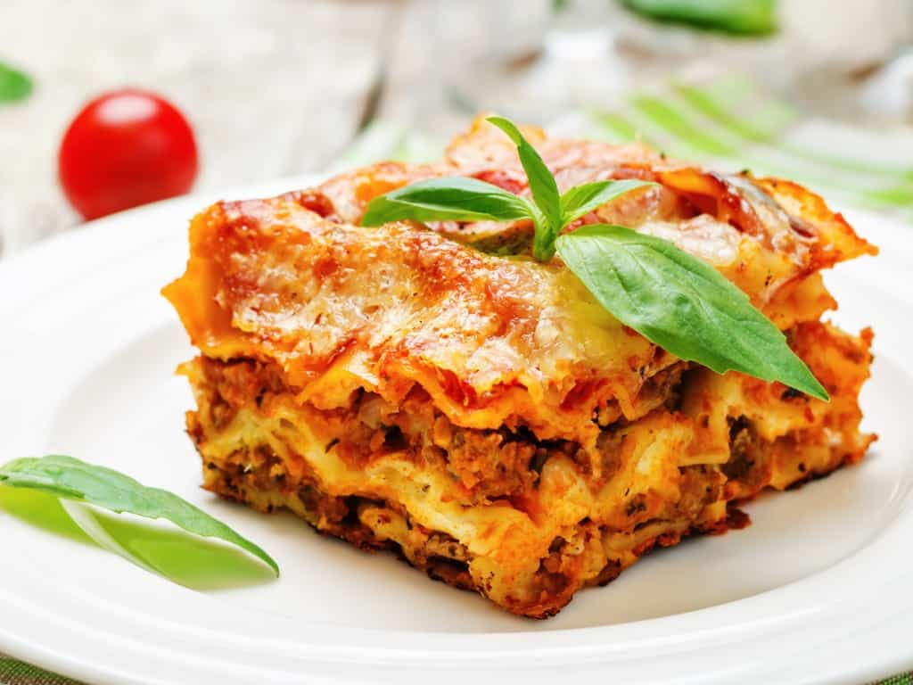

Worlds best lasagna!

The worlds best lasagna is an easy to follow, super delicious recipe
that will leave you with a wonderful tasting experience
Ingredients:
- 1kg of Minced meat
- 1 big onion
- 4 cloves of garlic
- 1 chilipepper
- Fresh tomatoes
- 1 canned tomatoes, chopped
- Fresh celery
- 2 red peppers
- Lasagna sheets
- Mornay sauce
- Grated cheese
- Salt
- Pepper
- Oregano
- Basil
- Cut onion, garlic and chilipepper into fine pieces
- Put the chopped stuff into a big pot
- When the chopped stuff is soft add the minced meat to the pot
- While the meat is cooking, chop the celery, fresh tomatoes and red peppers
- When there is no more raw meat add the celery
- Let it cook for 10 minutes
- Add the fresh tomatoes and red peppers
- let them cook for 5 minutes
- Add the canned tomatoes, salt, pepper, oregano and basil
- Let it cook for 30 minutes under a lit at middle temperature
- Turn on the oven to 200 degrees celcius
- Put the sauce in the bottom then mornay sauce and finish with lasagna sheets
- Keep doing that until it's done and top it off with mornay sauce and grated cheese
- Let it bake for 30 minutes in the oven